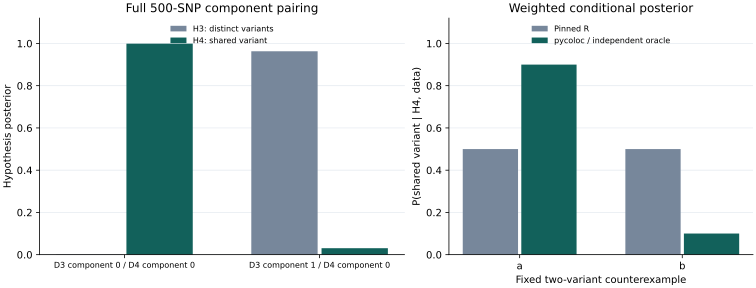

On this page
- Scope and reproducible command
- Public fixture, not new biological evidence
- 1. Direct quantitative ABF agreement
- 2. Colocalisation on identical official-R fits
- 3. Edges and corrected weighted behavior
- 4. Optional end-to-end native SuSiE
- Integrity and failure behavior
- Separately identified real-region evidence and limits
Executed agreement with official R
Prior-version evidence: the measurements and downloadable records below were executed before the public package rename. Historical
pyrsusielabels identify those original binaries. The current package isprusie; see the rename and migration checks for the new installation and unchanged numerical-source verification.
pycoloc 0.2.2rc2 passes the stated unweighted ABF and identical-fit pairing checks on the complete 500-SNP upstream teaching fixture. Corrected weighted fields deliberately differ from pinned R and instead pass independent mathematical checks. This report separates those outcomes.
Scope and reproducible command
python -m pip install .
python examples/check_example.py --output-dir example-output
This is an executed Markdown report, accompanied by prebuilt HTML. The command runs the public APIs and writes the complete numeric/structural check record and actual result tables. It needs neither R nor pyrsusie in standalone mode. The source archive bundles every input and reference used here.
The example was executed on CPython 3.12.2, Linux x86-64, NumPy 2.2.6, SciPy 1.15.3, pandas 2.2.3 and matplotlib 3.10.1. The default NumPy hypothesis engine was used. Primary fine-mapping settings were known n=1000, L=10, max_iter=100, float64 and sequential IBSS. Reference R was 4.4.0 with Netlib BLAS and one numerical thread.
| Reference | Exact source |
|---|---|
| coloc 6.0.3 | commit 8f20f0bc5e60ffc99e4c2f787bd55fd30cfe7c45 |
| susieR 0.16.6 | commit 8e56a8e038e989856d106d9ca5175cc664fea9d2 |
| Public input | Full stored D1–D4 from official coloc_test_data.rda; 500 variables each |
| Input and R source integrity | examples/data/reference.lock.json, checksums.json, manifest.json |
| Complete call parameters | examples/data/parameters.json; coloc p1=p2=1e-4; literal ABF defaults p12=1e-5, explicit-prior/BF cases p12=5e-6 |
| Independent mathematical expectations | examples/data/independent_oracles.json and runtime Decimal enumeration |
| Separate native regression checkpoint | examples/data/expected_native.json, including numerical source hashes |
The upstream source and data hashes are fixed; the historical source lock was not changed. The task-specific reference lock identifies susieR 0.16.6 explicitly.
Public fixture, not new biological evidence
These are existing synthetic teaching datasets, not a newly simulated study or a human dataset. Actual stored arrays—not stale help text—confirm 500 unique variables in D1, D2, D3 and D4. All are retained in original order. No padding, duplication, SNP selection based on agreement, or random generation was used.
D1/D2 share the stored causal label s105. D3 has s105 and s89; D4 has s105. N=1000 and sdY come from the stored object. Signed LD r retains the upstream synthetic variable convention and explicit axis order. Positions 1–500 are synthetic indices; biological build, ancestry and alleles are unavailable. Redistribution retains the upstream GPL declaration and attribution in the bundle. The example guide describes the files and regeneration recipe.
1. Direct quantitative ABF agreement
All calls use the beta/varbeta route and stored sdY, with default quantitative prior SD 0.15 × sdY. R and Python receive the same complete dataset pairs. Two calls pass literally no prior arguments (public defaults p1=p2=1e-4, p12=1e-5), and two explicitly set p12=5e-6 for consistency with the BF-pairing examples. No fine-mapping or LD calculation occurs in this layer. The literal-default R outputs, checked actual defaults and regeneration recipe are a separate immutable supplement in examples/data/default_abf/.
| Full 500-SNP pair | Max absolute H0–H4 error | Max absolute logBF error, either trait | Max absolute SNP.PP.H4 error | Result |
|---|---|---|---|---|
| D1 / D2, literal defaults | 1.110e-16 | 6.750e-14 | 1.110e-16 | PASS |
| D3 / D4, literal defaults | 2.220e-16 | 7.105e-14 | 4.441e-16 | PASS |
| D1 / D2, explicit p12=5e-6 | 2.646e-17 | 6.750e-14 | 1.110e-16 | PASS |
| D3 / D4, explicit p12=5e-6 | 3.331e-16 | 7.105e-14 | 4.441e-16 | PASS |
Hypothesis probabilities use the existing atol=1e-10, rtol=0 criterion. LogBF and conditional SNP posterior comparisons retain atol=1e-10, rtol=1e-10. SNP identities/order and counts compare exactly; hypothesis and conditional probabilities are finite, in [0,1] and normalized. The thresholds follow the inherited comparison scripts; no threshold was relaxed after execution.
D3 contains two upstream signals. Its ABF call is included to compare identical software inputs; the single-causal-variant ABF model does not become a multi-signal model because that call agrees. Use the component-pair layer for the multi-signal interpretation.
2. Colocalisation on identical official-R fits
Official susieR fits are exported to numeric arrays and JSON. Both coloc implementations consume those same fits: this isolates BF pairing from numerical differences in fitting. pycoloc selects the original credible-set component IDs and keeps the entire logBF row across all 500 SNPs, not only CS members. coloc_bf_bf is also called separately on those complete selected rows and matches coloc_susie exactly in this execution. Those two public paths share the production pairing implementation, so this is API consistency evidence; independence comes from the official-R comparisons.
| Pair | Original components (Python, zero-based) | Max absolute H0–H4 error | Max absolute SNP.PP.H4 error | Result |
|---|---|---|---|---|
| D1 / D2 | 0 / 0 | 4.441e-16 | 9.923e-16 | PASS |
| D3 / D4, shared signal | 0 / 0 | 2.168e-19 | 1.110e-16 | PASS |
| D3 / D4, additional versus shared signal | 1 / 0 | 1.665e-15 | 1.033e-14 | PASS |
R IDs are the original Python component IDs plus one. IDs are matched explicitly; return order is not treated as scientific identity. Lead SNPs and SNP count agree exactly. The D3/D4 official H4 values are approximately 0.999161 for the shared pair and 0.0304694 for the additional-versus-shared pair. The latter favors H3, approximately 0.963106. No single region-wide H4 is synthesized from these rows.
The frozen official fits converge in 2 iterations for D1, D2 and D4 and 8 for D3, returning 1, 1, 1 and 2 CS respectively. Actual returned coverage is stored separately from requested 0.95; it is not replaced with 0.95 or zero.

3. Edges and corrected weighted behavior
| Case | Actual behavior | Check |
|---|---|---|
| D3 strict purity / D4 | R returns unavailable; pycoloc returns status='no_cs', no hypothesis rows |
PASS; no fabricated H4=0 |
| D3 one iteration / D4 | D3 really did not converge; warning and [False, True] metadata remain visible |
PASS as a labelled diagnostic, not an accepted fit |
| Two equal BFs, weights [9,1] and [1,1] | Corrected shared-SNP probabilities [0.9,0.1] | Max oracle error 1.110e-16 |
| Partial-zero weights [1,0] and [1,1] | Corrected shared-SNP probabilities [1,0] | Exact oracle match; R BF wrapper rejects this input |
| Disjoint weights [1,0] and [0,1] | H4=0 with undefined conditional SNP posterior; H3 stays positive | Correct state and Decimal hypotheses |
| Fixed index weights on all 500 D1/D2 SNPs | Shared priors stay bound to SNP IDs through sorting | H0–H4 oracle error 4.441e-16; SNP error 2.331e-15 |
The independent small oracle enumerates all H0–H4 configurations in Decimal arithmetic. With unit BFs, q1=[0.00018,0.00002], q2=[0.0001,0.0001], and q12=q1×q2×p12/(p1×p2)=[0.000009,0.000001]. Conditional shared-SNP probabilities are q12/sum(q12)=[0.9,0.1]. This expectation does not call either package.
Pinned R returns [0.5,0.5] in its main SNP posterior despite weighted H4 evidence: the actual maximum discrepancy is 0.4, while H0–H4 agree to 4.441e-16 in that small case. On the fixed 500-SNP index-weight example, the original-R discrepancies are 0.00286208 for H0–H4 and 0.0709902 for SNP.PP.H4. The default per-SNP ABFs still agree. The known R sort/weight association and omission of weights from its main SNP posterior explain why this is a corrected-mathematics comparison, not an unqualified parity claim.
The weights are predeclared software checks, 1 + (one_based_index % 5) and 1 + (one_based_index % 3), not biological priors. Fine-mapping prior weights are a different stage and are never automatically copied into coloc weights. The raw R outputs remain unchanged in r_coloc.json; the native, R and mathematical expectations are separate files.
Shared q12 is not renormalized to a fixed total. Keyed SNP/weight alignment, explicit effect-prior SDs, stable positive H3 evaluation, and exact partial-zero support retain their existing inference semantics. Upstream differences records the broader counterexamples and supporting unit tests.
4. Optional end-to-end native SuSiE
python examples/check_example.py --native-pair --output-dir native-example-output
This path was executed with pycoloc 0.2.2rc2 + pyrsusie 0.2.3rc4, the selected A02-only candidate. It fits D1–D4 with the same recorded known-n settings and passes the native result objects directly to pycoloc. The backend identifies itself as pyrsusie-rust/0.2.3-rc.4 with pinned susieR 0.16.6 semantics.
| Dataset | Max absolute PIP error | Native / R iterations | Native / R CS count | Max absolute component logBF difference (diagnostic) |
|---|---|---|---|---|
| D1 | 5.469e-10 | 2 / 2 | 1 / 1 | 1.072e-7 |
| D2 | 2.007e-10 | 2 / 2 | 1 / 1 | 1.321e-8 |
| D3 | 4.843e-10 | 8 / 8 | 2 / 2 | 1.575e-7 |
| D4 | 8.815e-10 | 2 / 2 | 1 / 1 | 5.247e-8 |
All four primary fits converge. All 2,000 PIPs pass atol=1e-5, rtol=0; alpha normalization, probability bounds and variance validity pass. Native CS members and original component IDs match the frozen R examples; actual returned coverage and purity remain in the check record. This is observed agreement on these cases, not a guarantee of equal CS across all inputs.
| Native-to-native colocalisation, compared with the official-R pair | Max absolute H0–H4 difference | Max absolute SNP.PP.H4 difference |
|---|---|---|
| D1 / D2, component 0 / 0 | 3.685e-13 | 1.205e-10 |
| D3 / D4, component 0 / 0 | 2.461e-12 | 2.225e-11 |
| D3 / D4, component 1 / 0 | 1.548e-10 | 1.222e-9 |
These downstream quantities are diagnostics, not additional PIP acceptance thresholds. Some entries in D1/D2's conditional SNP vector and D3/D4's additional-signal row exceed the tighter identical-fit comparison bounds. The full record retains those flags rather than claiming all-field parity. The model inputs and PIP criterion remain unchanged.
The selected pyrsusie source excludes B01. Its separate fixed real-panel comparison to rc17 recorded 118 faster, 0 tied and 82 slower cases out of 200 using one warmup and seven full-call repetitions per case. That observed majority applies to the A02 package versus rc17, not an isolated all-200 incremental A01 ablation, a universal speed claim, or a pycoloc speed claim.
Integrity and failure behavior
The final executed standalone check passed 209 checks, including structural validity, independent R/math checks and separate native regression checks. The explicitly enabled native pair passed 235 checks and retained 24 separate diagnostic entries. Download the standalone check record and native pair check record for every field, actual parameters, environment/backend versions and errors. Before the native checkpoint was frozen, the 98 input/R/math checks passed independently. Five dedicated self-check tests passed: successful R-free/no-pyrsusie execution; a corrupted input file fails checksum verification; an altered expected H4 fails numerically even after its checksum is repaired; guarded standalone computation cannot import pyrsusie/rpy2 or spawn an external process; and changing only the caller version label does not fail. The complete installed-package test suite passed 213 tests. After adding the literal-default ABF supplement, the five affected public self-check tests were rerun and passed.
A new caller version string is recorded, not treated as numerical failure. The runner never overwrites inputs, expected outputs, or R references. Check failures return a nonzero process exit code and a useful field/error message. Corrected-field differences are reported even when the intended mathematical checks pass.
Separately identified real-region evidence and limits
The public synthetic example is not the private real-region validation panel. The release review separately accounts for the existing fixed 100 regions / 200 trait fits, using unchanged official-R outputs and final selected package source. Private inputs and outputs are not redistributed in this source archive. A PIP acceptance result is not a promise that every component BF, CS, or downstream colocalisation value is equal.
These examples do not establish equivalence over every model or input. ABF assumes at most one causal variant per trait; SuSiE depends on LD/effect consistency, fitting settings and convergence. Missing CS is unavailable, not negative evidence for colocalisation. A nonconverged fit remains a limitation even when its numerical behavior is reproducible. pycoloc supports the documented summary-statistic and existing-fit interfaces; it is not the entire R coloc API. Local Linux/CPython checks do not establish remote CI success or universal platform coverage.